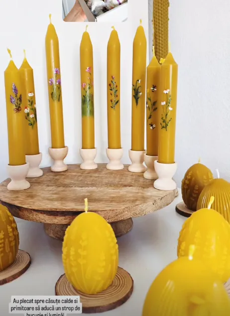
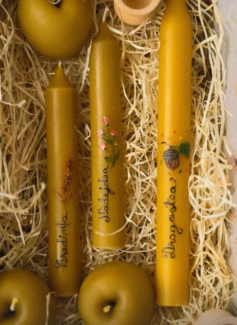

Despre atelier
Din mâini, cu răbdare. Din inimă, cu drag.
La „Amintiri cu Mama”, frumusețea stă în lucrurile simple: ceară naturală de albine, forme inspirate din natură și mici detalii pictate manual.
Fiecare piesă este o invitație la liniște, la bucuria de a dărui și la amintirile pe care le păstrăm aproape.
Acesta este un text de prezentare provizoriu, pe care îl putem înlocui cu povestea reală a brandului.